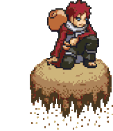
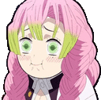
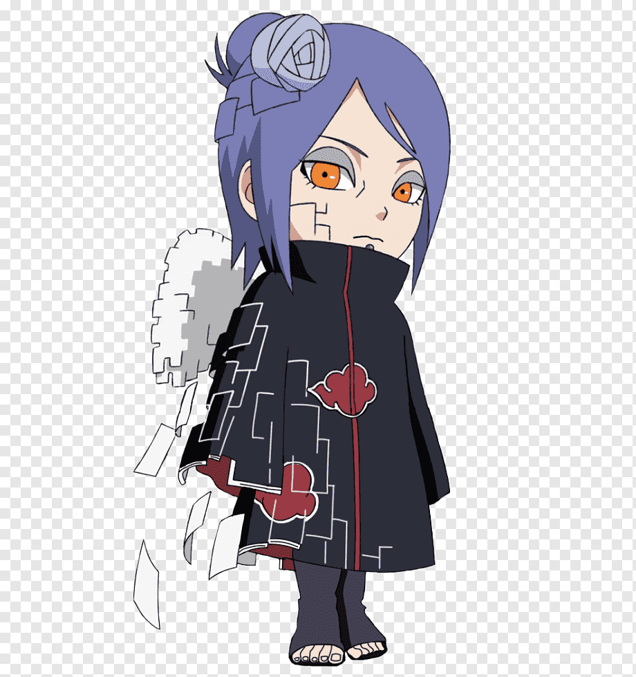
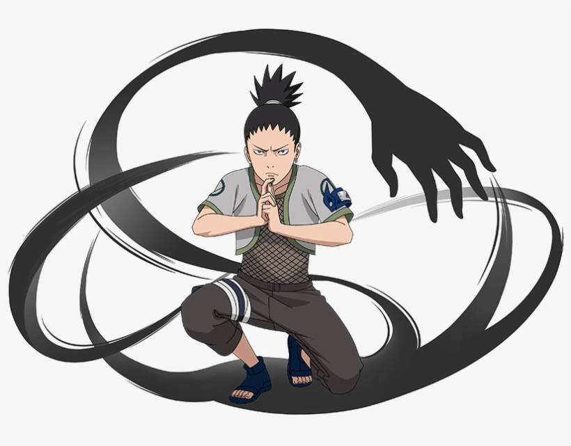
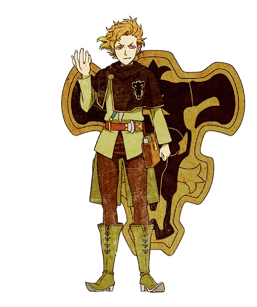
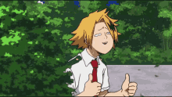
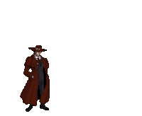
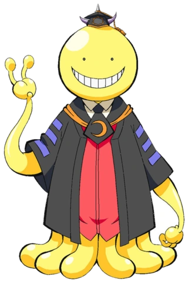
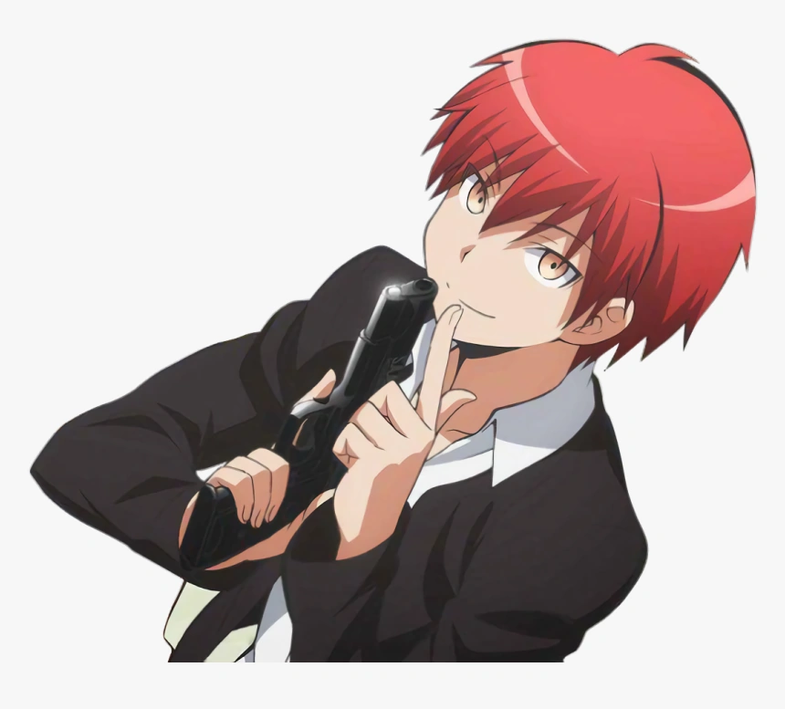
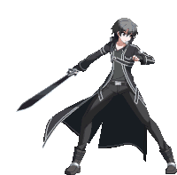

-
Gaara #001
- ninja
Criado para se tornar uma terrível arma de destruição em massa,Gaara odeia o mundo e vê na matança a razão de sua existência. Ainda é genin, mas sua capacidade garante um desafio até para um jonin experiente!
-
teknight mitsuri #002
- espadachim
Mitsuri é uma espadachim muito poderosa. Diz-se que ela concluiu a Seleção Final em apenas seis meses de treinamento, o que Kyojuro considera excelente. Mitsuri utiliza um estilo de combate baseado no “amor”.
-
Konan #003
- ninja-renegado
Konan é uma das personagens femininas mais lembradas e queridas pelos fãs de Naruto, principalmente por sua trajetória triste, seus feitos como kunoichi e por ser a única mulher a integrar a Akatsuki, sendo uma de suas fundadoras ao lado de Nagato.
-
Shikamaru #004
- ninja
Shikamaru é uma pessoa que não se entusiasma muito facilmente e prefere dormir a qualquer outra coisa. Ele gosta de jogos de inteligência, em que geralmente se deleitam os velhos, como o shogi. Mas quando o dever chama, Shikamaru assume um forte sentido de proteção contra os seus companheiros, embora no início, por seu próprio testemunho, ele diz que falta de coragem, se autodenominando "o covarde número um". Com o passar do tempo, torna-se uma pessoa cada vez mais responsável em relação aos seus amigos, como quando decide ficar para trás para enfrentar os ninjas do som só para permitir que Naruto atinja Sasuke.
-
Finral #005
- Cavaleiro-magico
Finral Roulacase 「フィンラル・ルーラケイス Finraru Rūrakeisu」 é um nobre da Casa Vaude e um Cavaleiro Mágico Júnior de 1ª Classe do esquadrão Touros Negros do Reino Clover. Ele é de Tota, uma vila dentro do Reino Clover.
-
Denki #006
- heroi
Kaminari Denki (上鳴電気) é um personagem do anime Boku no Hero Academia, onde é um estudante de 16 anos de idade, aspirante a herói. Estudando na renomada escola U.A (Yūei), se encontra no primeiro ano do ensino médio, na turma do protagonista, quero dizer na turma 1-A. Sua individualidade consiste em criar e disparar eletricidade de seu corpo. Se Denki utilizar excessivamente seu poder, o cérebro dele pode entrar em um curto circuito e o mesmo perde toda a sua personalidade, se tornando um idiota até voltar ao normal. Por ter uma personalidade engraçada e alegre, é um personagem muito amado pelos fãs da obra.
-
Alucard #007
- vampiro
Alucard (アーカード, Ākādo?) é o principal protagonista da série Hellsing criada por Kohta Hirano. Ele é a arma mais poderosa da Organização Hellsing, que trabalha contra vampiros e outras forças sobrenaturais. Alucard não é um mero Vampiro; ficou implícito que ele é o vampiro mais poderoso vivo e pode ser o personagem mais poderoso da série, rivalizado apenas por O Capitão e Alexander Anderson. Ele também é o Mestre de Seras Victoria e um servo muito leal ao líder da Organização Hellsing; Sir Integra Fairbrook Wingates Hellsing. Os mesmos atores de Alucard no anime original reprisaram seus papéis como Alucard em Hellsing: Ultimate; com o seiyu japonês sendo Joji Nakata, e o dublador inglês sendo Crispin Freeman.
-
Koro Sensei #008
- alien
Korosensei (殺 せ ん せ ー) atua como o professor de sala de aula da Classe 3-E da Kunugigaoka Junior High School e o protagonista coadjuvante anti-heróico da Assassination Classroom. Ele alegou ser o responsável por criar a lua crescente permanente e acrescentou que planejava destruir a Terra depois de ensinar a Classe 3-E por um ano. Antes de ser professor, ele era o assassino conhecido como "O Ceifador".
-
karma #009
- assassino
Karma Akabane (赤羽 業カルマ Akabane Karuma) é um estudante e o tritagonista da classe 3-E de Korosensei da Kunugigaoka Junior High School, que foi suspenso da escola devido ao seu comportamento violento e um dos amigos mais próximos de Nagisa.
-
kirito #010
- espadachim-on
Kazuto Kirigaya (桐ヶ谷 和人, Kirigaya Kazuto?), nascido como Kazuto Narusaka (鳴坂 和人なるさか かずと, Narusaka Kazuto?), e conhecido como Kirito (キリト, Kirito?) em «Sword Art Online» (SAO), «ALfheim Online» (ALO), «Gun Gale Online» (GGO) e «Project Alicization» é o principal protagonista da light novel, anime, mangá e jogos da série Sword Art Online. O nome de seu avatar, Kirito, foi retirado de seu nome real, "Kiri--" de Kirigaya e "----to" de Kazuto. Ele foi um dos mil jogadores que participaram do teste beta do primeiro VRMMORPG para o NerveGear, Sword Art Online.